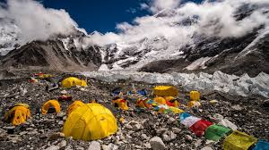

Everest Base Camp
אחד מטרקי ההליכה המפורסמים בעולם! המוביל אל מחנה הבסיס של האוורסט בצד הנפאלי בגובה כ־5,364 מטר. משך הטרק: 12–14 ימים בממוצע. רמת קושי: בינונית–מאומצת — אין טיפוס טכני, אבל הגובה מורגש מאוד זה טרק מדהים אבל דורש קצב איטי והתאקלמות לגובה, ציוד חורפי בסיסי וביטוח טוב